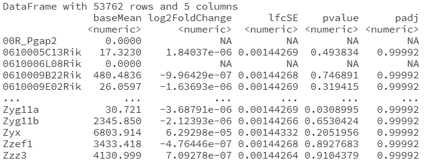
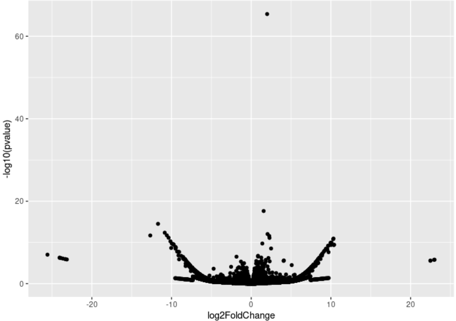

cnt[order(rowSums(cnt), decreasing = TRUE), ][1:10, ]4.4 RNA-seq analysis
In this module we will finally perform an RNA-seq analysis, putting previous modules into action!
From FASTQ to count matrix
Learn first how to align raw sequencing data, and produce a count matrix: The count matrix represents RNA molecule counts, and is obtained after aligning sequencing data, and comparing with the reference gene annotation. We will explain how to get this count matrix the common way, but also an incredibly fast shortcut to it using linear algebra (Canvas/Kaltura video: 4_5_alignment_for_rnaseq v2).
- As mentioned, salmon is a pseudocount tool, going from FASTQ to count matrix directly. You can read more here: https://combine-lab.github.io/salmon/about
- Salmon guide
Get Salmon for pseudocounting:
if you use HPC2N, you can load it through:
ml load GCC/13.2.0 Salmon/1.10.3If you run on your own computer, you can install it through conda.
Check that it runs by simply typing salmon in the terminal. You should get a help page.
Index a genome
Building a genome the scale of the human genome can take hours. Thus, for this course, we have already prepared a ready-made index; or rather, we found ready-made indices at http://refgenomes.databio.org, luckily also for human/salmon.
You can use the following code to create a directory and download an index. Be sure to put it in a directory to avoid files all over your account!
mkdir salmon_human_index
cd salmon_human_index
wget http://awspds.refgenie.databio.org/refgenomes.databio.org/2230c535660fb4774114bfa966a62f823fdb6d21acf138d4/salmon_partial_sa_index__default/2230c535660fb4774114bfa966a62f823fdb6d21acf138d4.gtf
wget http://awspds.refgenie.databio.org/refgenomes.databio.org/2230c535660fb4774114bfa966a62f823fdb6d21acf138d4/salmon_partial_sa_index__default/complete_ref_lens.bin
wget http://awspds.refgenie.databio.org/refgenomes.databio.org/2230c535660fb4774114bfa966a62f823fdb6d21acf138d4/salmon_partial_sa_index__default/ctable.bin
wget http://awspds.refgenie.databio.org/refgenomes.databio.org/2230c535660fb4774114bfa966a62f823fdb6d21acf138d4/salmon_partial_sa_index__default/ctg_offsets.bin
wget http://awspds.refgenie.databio.org/refgenomes.databio.org/2230c535660fb4774114bfa966a62f823fdb6d21acf138d4/salmon_partial_sa_index__default/decoys.txt
wget http://awspds.refgenie.databio.org/refgenomes.databio.org/2230c535660fb4774114bfa966a62f823fdb6d21acf138d4/salmon_partial_sa_index__default/duplicate_clusters.tsv
wget http://awspds.refgenie.databio.org/refgenomes.databio.org/2230c535660fb4774114bfa966a62f823fdb6d21acf138d4/salmon_partial_sa_index__default/gentrome.fa
wget http://awspds.refgenie.databio.org/refgenomes.databio.org/2230c535660fb4774114bfa966a62f823fdb6d21acf138d4/salmon_partial_sa_index__default/info.json
wget http://awspds.refgenie.databio.org/refgenomes.databio.org/2230c535660fb4774114bfa966a62f823fdb6d21acf138d4/salmon_partial_sa_index__default/mphf.bin
wget http://awspds.refgenie.databio.org/refgenomes.databio.org/2230c535660fb4774114bfa966a62f823fdb6d21acf138d4/salmon_partial_sa_index__default/pos.bin
wget http://awspds.refgenie.databio.org/refgenomes.databio.org/2230c535660fb4774114bfa966a62f823fdb6d21acf138d4/salmon_partial_sa_index__default/pre_indexing.log
wget http://awspds.refgenie.databio.org/refgenomes.databio.org/2230c535660fb4774114bfa966a62f823fdb6d21acf138d4/salmon_partial_sa_index__default/rank.bin
wget http://awspds.refgenie.databio.org/refgenomes.databio.org/2230c535660fb4774114bfa966a62f823fdb6d21acf138d4/salmon_partial_sa_index__default/ref_indexing.log
wget http://awspds.refgenie.databio.org/refgenomes.databio.org/2230c535660fb4774114bfa966a62f823fdb6d21acf138d4/salmon_partial_sa_index__default/refAccumLengths.bin
wget http://awspds.refgenie.databio.org/refgenomes.databio.org/2230c535660fb4774114bfa966a62f823fdb6d21acf138d4/salmon_partial_sa_index__default/reflengths.bin
wget http://awspds.refgenie.databio.org/refgenomes.databio.org/2230c535660fb4774114bfa966a62f823fdb6d21acf138d4/salmon_partial_sa_index__default/refseq.bin
wget http://awspds.refgenie.databio.org/refgenomes.databio.org/2230c535660fb4774114bfa966a62f823fdb6d21acf138d4/salmon_partial_sa_index__default/seq.bin
wget http://awspds.refgenie.databio.org/refgenomes.databio.org/2230c535660fb4774114bfa966a62f823fdb6d21acf138d4/salmon_partial_sa_index__default/versionInfo.jsonIf you want to try building your own (optional), check the Salmon guide. It boils down to:
- Downloading the human reference genome, and it has to be the cDNA for each gene (or CDS, coding sequence). To find suitable files, you would normally start digging here, and at some point you will land here. Whatever you do, ensure to use the gene cDNA FASTA and not the chromosomal DNA! (BWA/STAR would want the latter instead.)
- Running
salmon index -t ... -i .... Use multiple CPUs to speed up the process.
Get FASTQ with RNA to quantify:
Let’s investigate some neuroblastoma! In a dataset, it has been treated with a drug. We will compare with untreated cells. The data is from a previous study: https://www.ebi.ac.uk/biostudies/ArrayExpress/studies/E-MTAB-9315?query=E-MTAB-9315
There is plenty of public data that you can reanalyze and make new findings. Also to get new ideas or help design experiments. This saves a lot of time in the lab!
You will find a link to ENA with raw FASTQ files. You need at least 2 treated and 2 untreated samples for the statistics — it is kept to a minimum to reduce compute time for this course; ideally you would want 3-5 replicates each.
To save you time, we have picked suitable files to download. Here are the commands:
wget -nc ftp://ftp.sra.ebi.ac.uk/vol1/run/ERR431/ERR4319001/RUN466-6-26081-CLBGA-IC50-Celasterol-RNAseq1BR_S3_L001_R1_001.fastq.gz
wget -nc ftp://ftp.sra.ebi.ac.uk/vol1/run/ERR431/ERR4319005/RUN466-20-26210-CLBGA-IC50-Celasterol-RNAseq5BR_S12_L001_R1_001.fastq.gz
wget -nc ftp://ftp.sra.ebi.ac.uk/vol1/run/ERR431/ERR4318985/RUN466-5-26079-CLBGA-DMSO-75-Celasterol-RNAseq1BR_S4_L001_R1_001.fastq.gz
wget -nc ftp://ftp.sra.ebi.ac.uk/vol1/run/ERR431/ERR4318989/RUN466-9-26102-CLBGA-DMSO-75-Celasterol-RNAseq2BR_S13_L001_R1_001.fastq.gz- Q1.1 Download the required raw files.
Quantify the number RNA molecules per gene:
Using the index you downloaded, stored in directory salmon_human_index, you can estimate the number of RNA molecules for each gene using this command:
salmon quant -i salmon_human_index -l A \
-r RUN466-20-26210-CLBGA-IC50-Celasterol-RNAseq5BR_S12_L001_R1_001.fastq.gz \
-p 1 --validateMappings -o quants/IC50_5_quantHere -p 1 means to use one CPU. You can arrange to use multiple if you want. The output is specified using -o.
Note
You can put \ at the end of any bash command lines if you want to manually divide them up to increase readability. But be careful when copying above as there cannot be any newlines when you paste it in (bash will then think that you are giving it 3 separate commands, and fail).
- Q1.2: Quantify each of the 4 FASTQ-files you downloaded. Give them suitable simple names. Note that the subdirectory
salmon_human_indexmust be in the directory you are running the command in (or you need to adjust the command).
Load the counts in R:
As is common, data is not always stored in the simplest format. We have written some code here to enable you to read the counts for each library into one matrix in R. It assumes that you stored all outputs in the directory ~/glio/quants/.
## Read each separate salmon output of counts
all_counts <- list()
rootdir <- "~/glio/quants/"
for (f in list.files(rootdir)) {
print(f)
onedat <- read.csv(file.path(rootdir, f, "quant.sf"), sep = "\t")[, c("Name", "NumReads")]
onedat$f <- f
all_counts[[f]] <- onedat
}
## Put into one single count matrix
cnt <- reshape2::acast(do.call(rbind, all_counts), Name ~ f, value.var = "NumReads")- Q1.3: You can already check which genes have the most amount of RNA. Which transcript has the most RNA?
- Q1.4: Optional: Are there any genes you recognize? You can look up any geneID such as on Ensembl. Here is the page for the human gene IL4.
Differential expression analysis
See this video, showing the overall workflow from counts to statistical test (Canvas/Kaltura: 4.3 deseq).
Model matrices are central to analysis of RNA-seq, microarray, proteomic and what-have-you data. Once you grasp this concept, you can do most bioinformatics statistical analysis!
You will see that you can model a simple comparison between condition A and B (for two samples) as
\[ \begin{bmatrix} \text{counts}_A \\ \text{counts}_B \end{bmatrix} \sim \mathrm{Poisson}\!\left( \begin{bmatrix} 1 & 0 \\ 1 & 1 \end{bmatrix} \begin{bmatrix} \text{baseline} \\ \text{treatment} \end{bmatrix} \right) \]
and then just compute \(P(\text{baseline}_2 < q)\).
- The model matrix is \(\begin{bmatrix} 1 & 0 \\ 1 & 1 \end{bmatrix}\).
- \(P(\text{treatment} < q)\) is being evaluated to see if the expression is different from 0.
- We call \(\text{treatment}\) a contrast.
Alternatively, equivalently,
\[ \begin{bmatrix} \text{counts}_A \\ \text{counts}_B \end{bmatrix} \sim \mathrm{Poisson}\!\left( \begin{bmatrix} 1 & 0 \\ 0 & 1 \end{bmatrix} \begin{bmatrix} \text{baseline}_1 \\ \text{baseline}_2 \end{bmatrix} \right) \]
but the test becomes a bit more complicated instead: \(P(\text{baseline}_2 - \text{baseline}_1 < q)\).
- The model matrix is \(\begin{bmatrix} 1 & 0 \\ 0 & 1 \end{bmatrix}\).
- \(P(\text{baseline}_2 - \text{baseline}_1 < q)\) is evaluated to see if it is different from 0.
- \(\text{baseline}_2 - \text{baseline}_1\) is the contrast in this case.
The Poisson distribution we looked at only models the sequencing process. To also account for biological variation, we will instead use the negative binomial distribution, which turns out to be a natural extension. Optional reading at Wikipedia.
Optional reading on the origin of the negative binomial distribution, but even better is the DESeq2 paper.
Differential expression theory:
- Q2.1: Using pen and paper, convince yourself that log(fold change) = 0 means that there is no change.
- Q2.2: Using pen and paper, convince yourself that high −log(p-value) means smaller p-values, and thus higher significance.
Set up the condition data frame:
To run DESeq2 or any similar package, you need a data frame with information about the samples. The row names should correspond to sample names (i.e. column names in the count matrix). If you don’t have a condition data frame, you can often create it from the names of the samples. This is a starting point:
cond <- data.frame(
row.names = colnames(cnt)
)
cond$treatment <- ...You want to obtain a column called treatment, for each sample. In this case, DMSO and IC50 (or anything you prefer that is human-interpretable).
- Q2.3: Fill in the column.
Install DESeq2
See here: https://bioconductor.org/packages/release/bioc/html/DESeq2.html
Remember to load it after installation!
Run DESeq2 to fit statistical model:
You are now ready to perform the statistical analysis! The following code, largely taken from the vignette (recommended reading!), sets up a pairwise test.
dds <- DESeqDataSetFromMatrix(
countData = round(cnt), # salmon output non-integer counts; round to integer to fix
colData = cond,
design = ~ treatment # specifies model matrix
)
dds <- DESeq(dds)
res <- results(dds, c("treatment", "a", "b")) # set appropriately- Q2.4: Adjust to compare treated and untreated samples.
- Q2.5: What does the model matrix look like? Does it make sense as compared to the video explanation? (hint: typical exam material!)
Extract the differentially expressed genes and make a volcano plot:
The output list of genes (unsorted) will look kind of like below.

log2FoldChangeis the log2(fold change) and what most are interested in.padjis multiple-hypothesis-testing-adjusted p-value.Q2.6: Adjusted p-value — this means adjusted for multiple hypothesis testing. What does this mean? This video explains: https://www.youtube.com/watch?v=HLzS5wPqWR0
- Q2.7: Make a volcano plot to aid interpretation. This plot is designed as follows:
- x-axis: log2 fold change
- y-axis: −log10 adjusted p-value

- Q2.8: Which gene has the highest significance? Note that ENST* are human gene transcripts. A gene has multiple transcripts (isoforms). Use Ensembl to look up the name of the gene.Also note that the most significant gene has not changed much up or down in expression!
- Q2.9 Optional: Use ggrepel, https://cran.r-project.org/web/packages/ggrepel/vignettes/ggrepel.html, to highlight the names of the most differentially expressed genes. This is commonly done in articles, and a good package to know.
A more complex RNA-seq dataset
Sometimes you are lucky and counts have already been computed for you. Such is the case for this dataset where they have treated two cell lines with an anti-cancer drug: https://www.ebi.ac.uk/biostudies/ArrayExpress/studies/E-MTAB-14822
- Q3.1 Optional: What are the two cell lines? What cell types do they represent? They are commonly used in research!
Download and load the data
- Q3.2 From the dataset link, download
meta.csv(the condition data frame) andreadCounts.csv.gz.
- Q3.3 Load the data into R. This can frequently be the hardest task as there is little agreement on the precise format of CSV/TSV files!
- Note that this time you do not have to construct the condition matrix, but it is already provided. But ensure to set the row names to match the column names of the count matrix. Note that you have to break up the treatment column into time (6h, 24h) and treatment (no treatment, 5h of treatment, 10h of treatment).
- When you load the count matrix, be careful that you might get the row names instead as column 1. DESeq will be unhappy. To fix this, either move the values to the rownames, or adjust the parameters to
read.csvto avoid this (see the help forread.csv; e.g.row.namescan be adjusted).
Perform DE analysis using DESeq2
There is much more you can compare here, since you got both (1) cell type and (2) time since treatment. We will return to this dataset in Module 5 to perform unsupervised machine learning.
Note that there is metadata that you can ignore, such as the position of the sample on the multiwell plate where the sample was prepared.
You can build a multilinear equation describing the expression of genes as: ~ cell_type + treatment_duration + time_since_treatment.
- Q3.4 Does this model make sense? No model is perfect! Are there any assumptions built into the model? (this question has no single correct answer)
- Q3.5 What does the model matrix look like? Note as above that there are multiple model matrices that could be used for this problem. How would you have preferred to construct it?
- Q3.6 Which genes are DE between the cell lines? Optional: If you checked what the cell lines are, do any genes make sense to you? (not trivial)
- Q3.7 Which genes are DE due to the treatment? Optional: Do any genes make sense? (not trivial)
Extra exercise material
A second pass at the same material, for extra practice. Same conventions as above — try each question first, then peek.
Alignment and quantification (extra)
- QE1.1 What does the
--validateMappingsflag do insalmon quant, and why would you usually want it on?
- QE1.2 Why use a pseudoaligner like salmon instead of a full splice-aware aligner like STAR or BWA when all you want is a gene-level count matrix?
- QE1.3 Open one of the
quant.sffiles salmon produced. What are the columns, and which one did we actually use when we builtcnt?
DESeq2 differential expression (extra)
- QE2.1 DESeq2 internally normalises libraries with size factors rather than scaling to TPM. Inspect them and explain what they correct for.
- QE2.2 Inspect the per-gene dispersion estimates with
plotDispEsts(dds). What should the plot look like if the model is behaving well?
- QE2.3 Make an MA plot with
plotMA(res)and explain the axes. What does a “good” MA plot look like for a treatment-vs-control comparison?
- QE2.4 Run
summary(res)and interpret the output. How many genes go up, how many go down, at the default thresholds?
- QE2.5 Pick a stricter cutoff than just
padj: keep genes withpadj < 0.05andabs(log2FoldChange) > 1. How many are left?
Model matrices and contrasts (extra)
- QE2.6 Suppose you want
IC50to be the reference level instead of the default alphabetical pick (DMSO). Userelevelto do this and re-fit. Does the model matrix or the contrast change?
- QE2.7 What does
model.matrix(~ 0 + treatment, data = cond)look like (the no-intercept form), and how would you extract the IC50-vs-DMSO contrast from addsfitted withdesign = ~ 0 + treatment?
- QE2.8 A reviewer asks: “your design has 4 samples and 1 factor with 2 levels — how many parameters does your model actually estimate per gene?” Answer using the model matrix.
Multivariate designs (extra)
- QE3.1 Re-fit the E-MTAB-14822 dataset with an interaction term:
design = ~ cell_type * treatment_duration. What extra coefficients show up inresultsNames(dds)compared to the additive~ cell_type + treatment_durationmodel?
- QE3.2 Using
resultsNames(dds)from the interaction model, pull out (a) the main effect of treatment in the reference cell line, and (b) the interaction term itself. What is the biological interpretation of each?
- QE3.3 What is the practical difference between testing a main effect of
treatment_durationand testing the interactioncell_type:treatment_duration? When would you prefer one over the other?